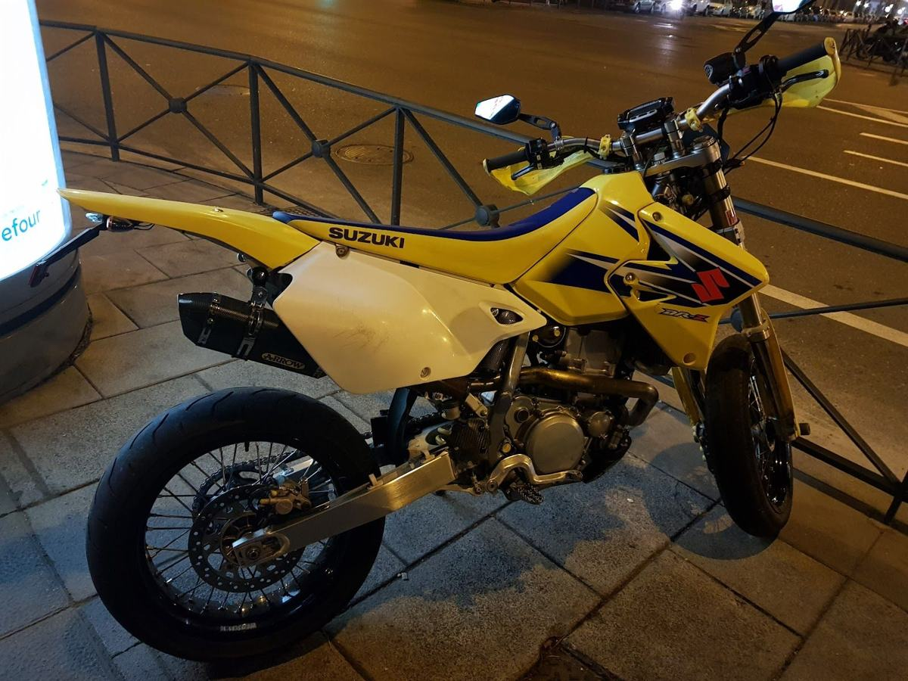
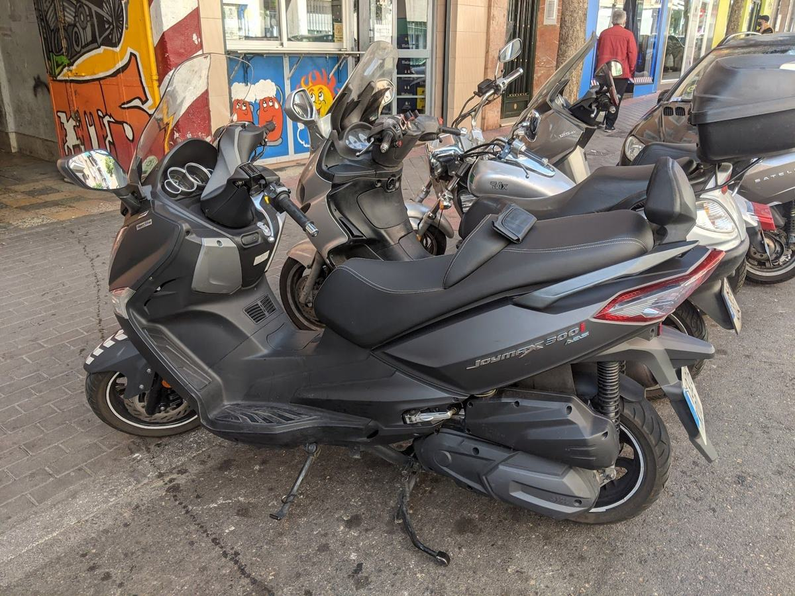
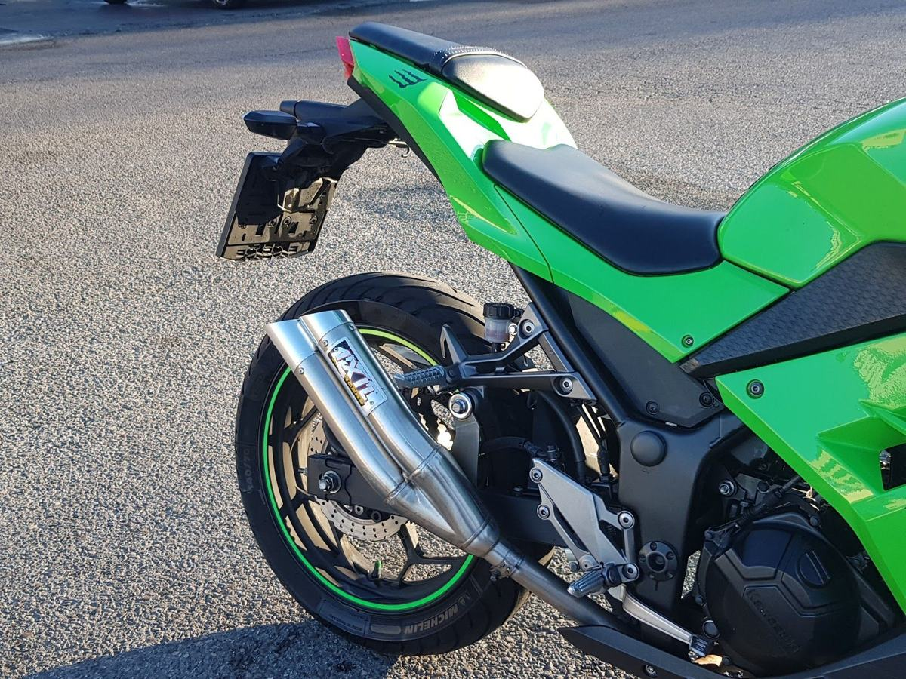
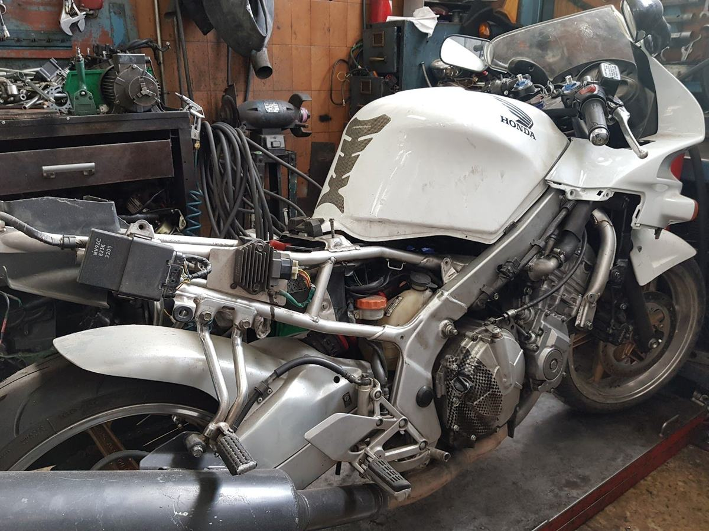
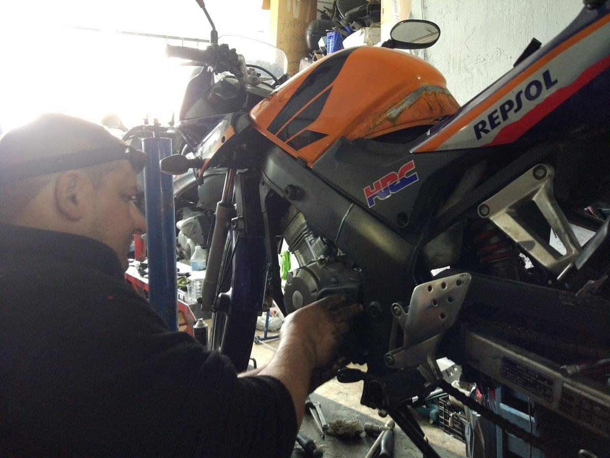
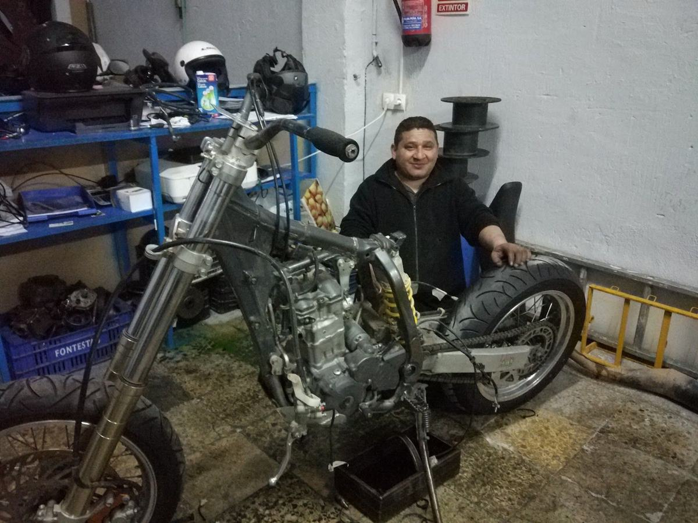
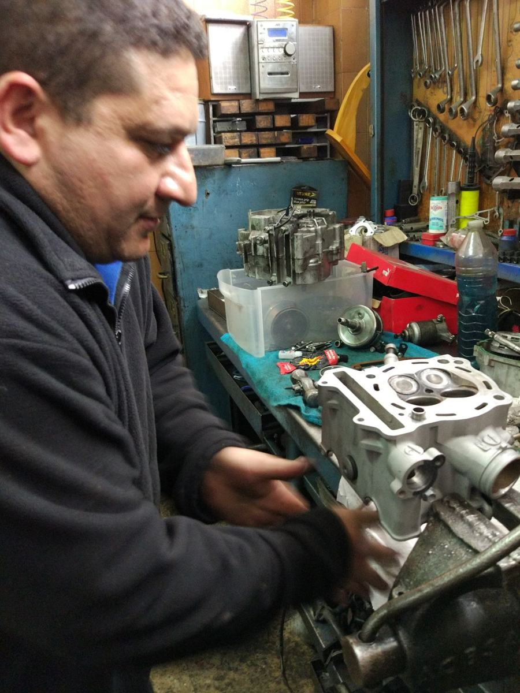
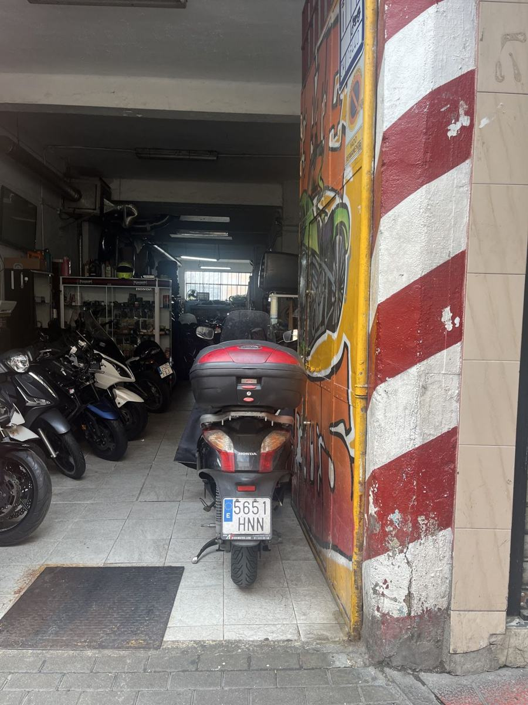

Scooters, naked, deportivas y trail. Mecánica, neumáticos y puesta a punto en la calle Alejandro Sánchez, Carabanchel.
Pide cita por WhatsAppVer preciosDa igual lo que conduzcas: si tiene dos ruedas, aquí se arregla.

ScooterEl día a día por Madrid
DeportivaPuesta a punto y escapes
CarenadasMotor, chasis y carenado
Off-roadTrail, enduro y motard
ProyectosRestauración y preparación
Abrimos el motor cuando hace falta y te enseñamos lo que hemos encontrado antes de cambiar nada.
| Lunes | 9:00–20:30 |
|---|---|
| Martes | 9:00–20:30 |
| Miércoles | 9:00–20:30 |
| Jueves | 9:00–20:30 |
| Viernes | 9:00–20:30 |
| Sábado | 10:00–18:00 |
| Domingo | Cerrado |
C. de Alejandro Sánchez, 16
Carabanchel, Madrid

Busca las rayas